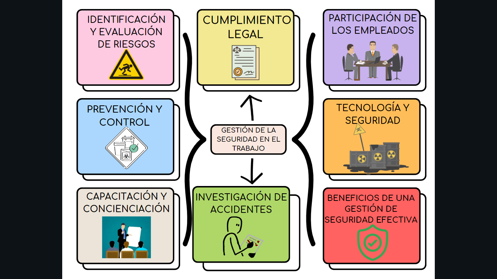

Es una parte fundamental de cualquier entorno laboral. Tiene como objetivo principal proteger la vida y el bienestar de los empleados al minimizar los riesgos laborales y crear un entorno de trabajo seguro.
En resumen, la gestión de la seguridad en el trabajo es esencial para proteger a los empleados, cumplir con las regulaciones legales y mantener una operación eficiente y responsable. Una estrategia integral que incluye evaluación de riesgos, capacitación, tecnología y participación de los empleados es fundamental para garantizar un entorno laboral seguro.